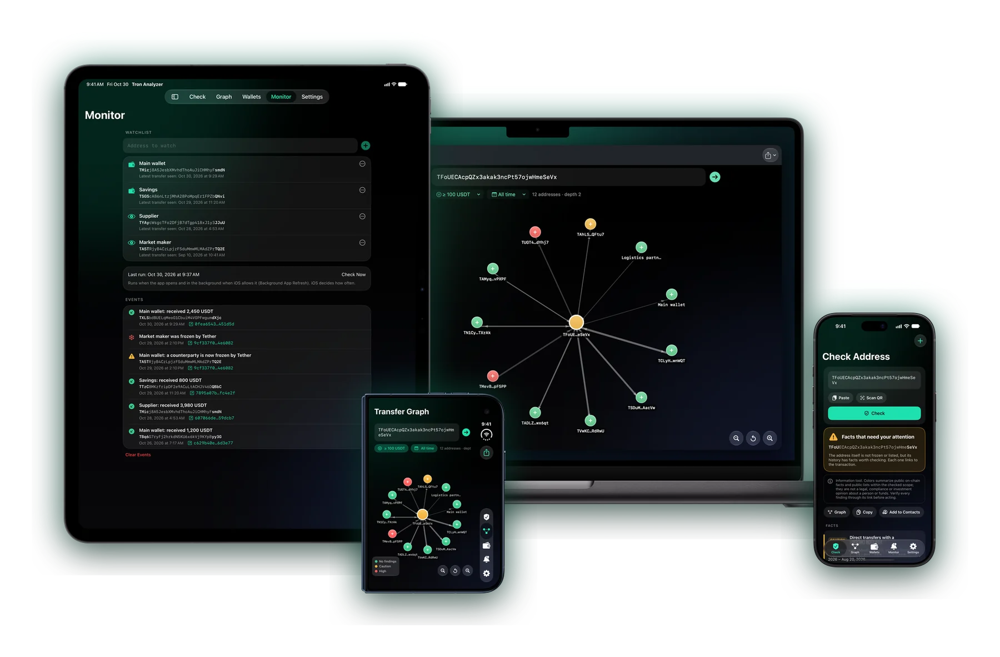
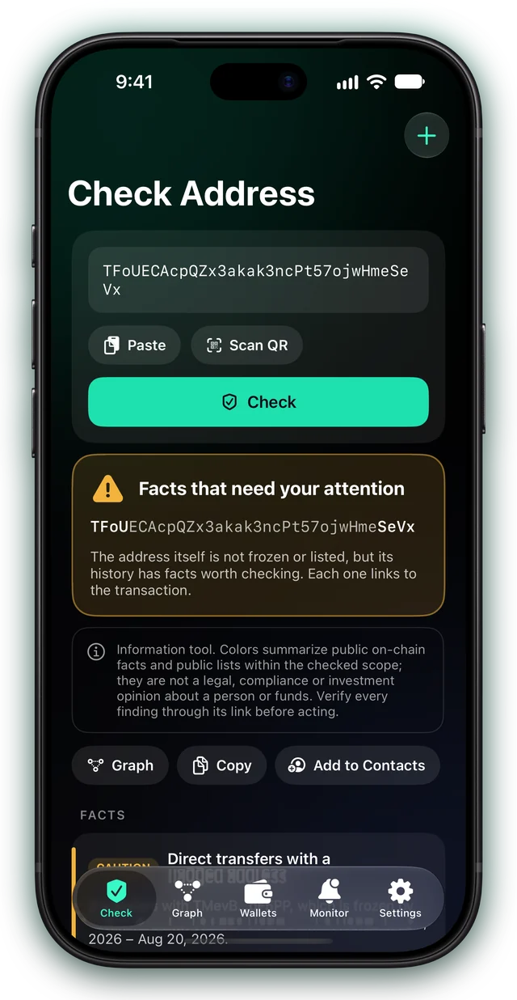
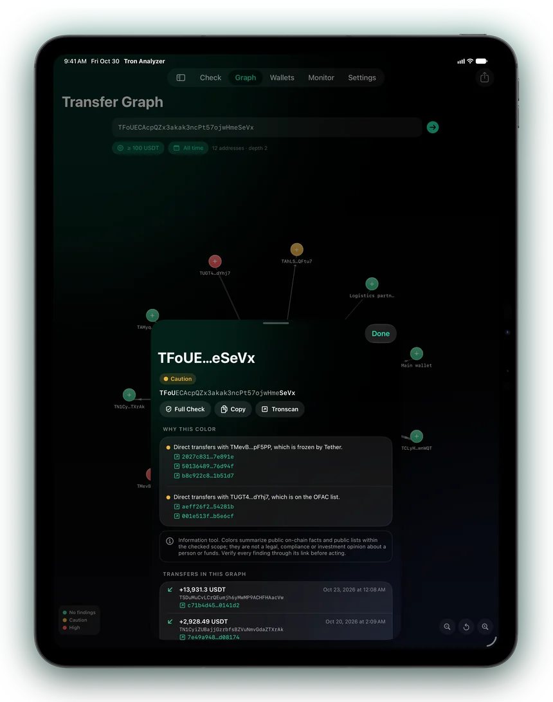
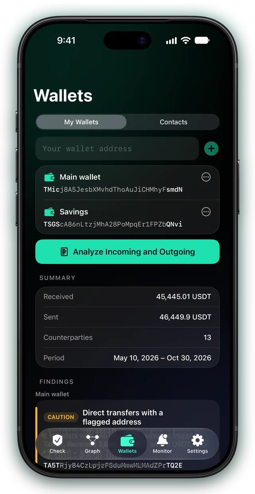
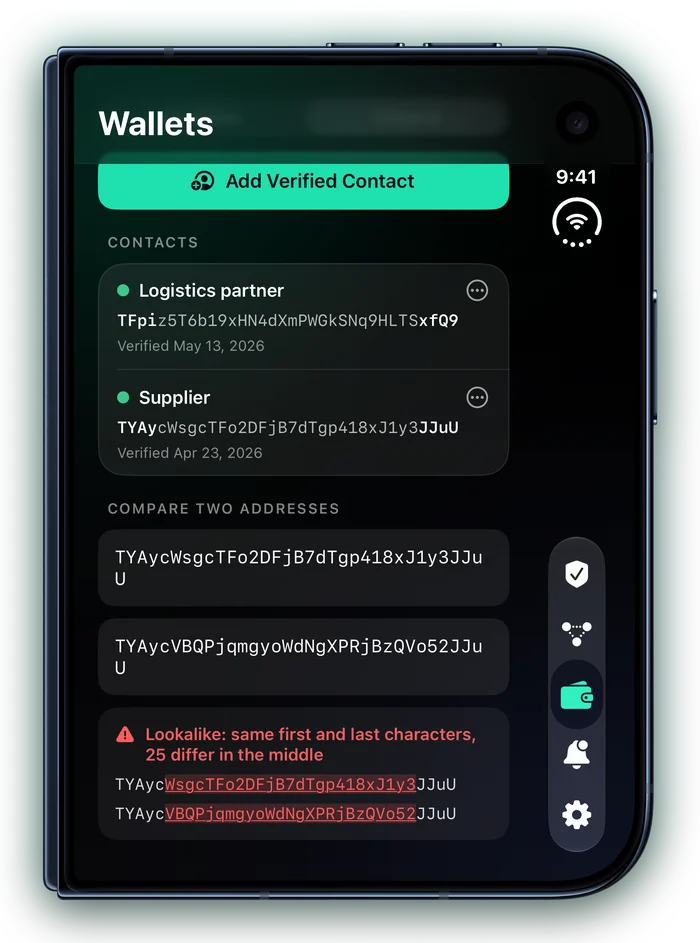
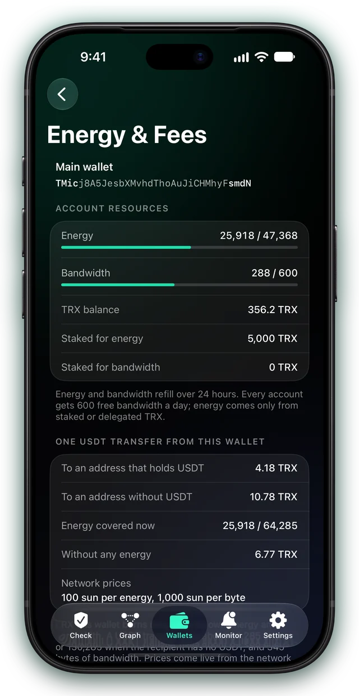

USDT on TRON
Check any address
before you send USDT
Tether freezes, the OFAC sanctions list and the transfers between addresses — read straight from the network and shown as facts, each with its reason and a link you can verify.
For iOS 26, iPadOS 26 and macOS 26 or later

Address check
Every color has a reason and a link
Paste an address or scan its QR code. The app reads Tether's freeze state and history for it, the OFAC sanctions list, its account and balances, and its USDT transfers with frozen or sanctioned addresses one or two steps away.
- Each finding says why it sets the color and links to its transaction on Tronscan
- Green means no findings in the checked scope — it is not a guarantee
- The limits of the check are listed with the result

Transfer graph
See where the money flows
Addresses become nodes and USDT transfers become edges, with totals and dates. The colors follow the same facts as the check.
- Tap a node for its color reasons and transfers
- Expand any address one more step
- Filter by amount and period, export the graph as CSV

Wallets
Audit everyone who pays you
Add your own addresses — only the addresses, no keys — and see who sent you USDT and where you sent it, with an audit of every counterparty.
- Received and sent totals, counterparties and the period at a glance
- Findings per wallet, with the transactions behind them
- Energy and fees of each wallet one tap away

Address poisoning
Spot a lookalike before you paste it
Poisoning sends you a tiny transfer from an address that starts and ends like one you use, hoping you copy it from your history. Keep the addresses you trust as contacts, and the app tells them apart.
- Warnings about lookalikes and zero or dust transfers from them
- Full addresses with every differing character highlighted
- Compare any two addresses; on Mac, an optional clipboard guard

Monitoring
Alerts on freezes and new transfers
Put addresses on a watchlist and the app checks them when it opens, through Background App Refresh on iPhone and iPad, and on a timer on Mac.
- Notifications for new incoming USDT
- When a watched address is frozen by Tether
- When a counterparty becomes frozen or sanctioned
Energy & fees
Know the fee before you send
A USDT transfer burns TRX unless the sender has energy. See what one transfer from your wallet costs now, at live network prices.
- Your wallet's energy, bandwidth and staked TRX
- About twice the energy when the recipient has no USDT — every check shows it
- The TRX to stake instead of burning, and the break-even point

Built on trust
Facts, not verdicts
Colors summarize public on-chain facts and public lists. The app judges no person and no funds, and every finding can be checked at its source.
Read-only
Never asks for private keys or seed phrases and cannot send funds. It is not a wallet.
Your data stays here
Wallets, contacts, watchlist and history live on your device. No account, no server, no tracking.
Straight to the source
TronGrid, Tronscan and the public OFAC list on GitHub, asked directly from your device.
Free API keys
Works without them; free TronGrid and Tronscan keys make checks faster. Kept in the Keychain.
Reports
A PDF report of a check with the date, sources and links; CSV of transfers, graphs and audits.
Seven languages
English, German, French, Ukrainian, Spanish, Japanese and Portuguese.
Free and Pro
Start free, go further with Pro
Free
Everything you need to check before a payment.
- 3 address checks a day
- Checks and graphs one step deep
- Wallets, contacts, lookalike warnings and address compare
- Energy & fees
Pro
Monthly, yearly or a one-time purchase.
- Unlimited address checks
- Checks and graphs two steps deep
- Watchlist monitoring with notifications
- PDF reports and CSV export
Check before you pay
One app for iPhone, iPad and Mac.